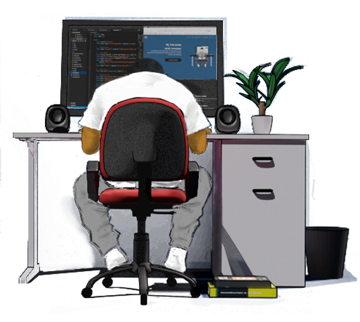
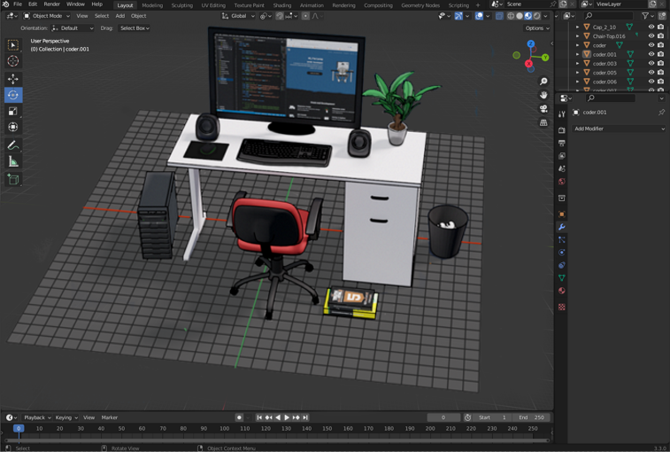

Hi, I'm Leroy
UI/UX Developer
A developer of responsive and interactive websites/web applications for mobile, tablet and desktop

Front-end Development
Latest Projects
Why Web Development?
Before studying Computer Science at University in 2016, my aim was to further my studies as a qualified PC Technician, but when given an option of pathways, the intrique of combining problem solving and creativity led me to choose web development. Web developent has allowed me to merge interests in art and technology, contributing to both a challenging and enjoyable process.
In addition to my technical skills in computing and web systems, I have a keen interest in animation, electronics, interior design and just about anything that involves being creative. For more information about my skills, please check out my cv
